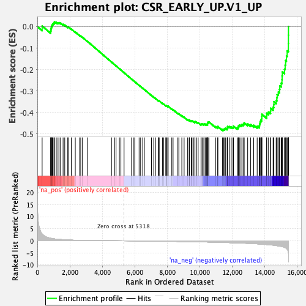
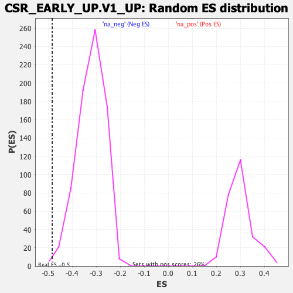

| | | Dataset | DE_genes |
| Phenotype | NoPhenotypeAvailable |
| Upregulated in class | na_neg |
| GeneSet | CSR_EARLY_UP.V1_UP |
| Enrichment Score (ES) | -0.48342893 |
| Normalized Enrichment Score (NES) | -1.5048668 |
| Nominal p-value | 0.0013531799 |
| FDR q-value | 0.08631283 |
| FWER p-Value | 0.378 |
Table: GSEA Results Summary

Fig 1: Enrichment plot: CSR_EARLY_UP.V1_UP
Profile of the Running ES Score & Positions of GeneSet Members on the Rank Ordered List
| PROBE | GENE SYMBOL | GENE_TITLE | RANK IN GENE LIST | RANK METRIC SCORE | RUNNING ES | CORE ENRICHMENT | | 1 | TIMM23 | | | 296 | 2.829 | 0.0027 | No |
| 2 | RIPK2 | | | 817 | 1.084 | -0.0228 | No |
| 3 | C21orf91 | | | 831 | 1.075 | -0.0152 | No |
| 4 | ACTR3 | | | 849 | 1.041 | -0.0082 | No |
| 5 | PLAUR | | | 867 | 1.013 | -0.0015 | No |
| 6 | CD33 | | | 899 | 0.983 | 0.0042 | No |
| 7 | EMC6 | | | 923 | 0.953 | 0.0101 | No |
| 8 | TXNDC12 | | | 968 | 0.898 | 0.0142 | No |
| 9 | YOD1 | | | 1028 | 0.822 | 0.0167 | No |
| 10 | CD274 | | | 1053 | 0.798 | 0.0214 | No |
| 11 | PTP4A1 | | | 1165 | 0.705 | 0.0196 | No |
| 12 | IL11 | | | 1273 | 0.625 | 0.0175 | No |
| 13 | SOX9 | | | 1338 | 0.594 | 0.0180 | No |
| 14 | CCDC59 | | | 1426 | 0.555 | 0.0166 | No |
| 15 | F3 | | | 1587 | 0.477 | 0.0099 | No |
| 16 | CHUK | | | 1688 | 0.437 | 0.0068 | No |
| 17 | PHF20L1 | | | 1873 | 0.362 | -0.0024 | No |
| 18 | MAPRE1 | | | 1898 | 0.355 | -0.0012 | No |
| 19 | UBE2N | | | 2091 | 0.300 | -0.0114 | No |
| 20 | C8orf76 | | | 2338 | 0.235 | -0.0256 | No |
| 21 | PANX1 | | | 2605 | 0.190 | -0.0415 | No |
| 22 | FJX1 | | | 2674 | 0.181 | -0.0445 | No |
| 23 | SLC16A1 | | | 2779 | 0.165 | -0.0500 | No |
| 24 | SCHIP1 | | | 3089 | 0.132 | -0.0691 | No |
| 25 | PTPN12 | | | 4570 | 0.038 | -0.1653 | No |
| 26 | PTGS2 | | | 4760 | 0.028 | -0.1774 | No |
| 27 | ZBTB12 | | | 4848 | 0.024 | -0.1829 | No |
| 28 | DDIT4L | | | 5051 | 0.013 | -0.1960 | No |
| 29 | NT5E | | | 5147 | 0.009 | -0.2021 | No |
| 30 | NSG1 | | | 5342 | -0.001 | -0.2148 | No |
| 31 | PLCH1 | | | 5801 | -0.026 | -0.2444 | No |
| 32 | TFG | | | 5915 | -0.034 | -0.2515 | No |
| 33 | SHB | | | 5997 | -0.039 | -0.2565 | No |
| 34 | TRMT10C | | | 6268 | -0.057 | -0.2737 | No |
| 35 | NIP7 | | | 6362 | -0.063 | -0.2792 | No |
| 36 | HMGA1 | | | 6489 | -0.072 | -0.2869 | No |
| 37 | PPIF | | | 6591 | -0.079 | -0.2929 | No |
| 38 | AMD1 | | | 7029 | -0.113 | -0.3205 | No |
| 39 | UGDH | | | 7169 | -0.124 | -0.3286 | No |
| 40 | CBFB | | | 7280 | -0.134 | -0.3347 | No |
| 41 | POLE3 | | | 7460 | -0.149 | -0.3452 | No |
| 42 | VTA1 | | | 7466 | -0.150 | -0.3444 | No |
| 43 | MRPS35 | | | 7505 | -0.152 | -0.3457 | No |
| 44 | DSP | | | 7705 | -0.171 | -0.3573 | No |
| 45 | DDX21 | | | 7780 | -0.177 | -0.3608 | No |
| 46 | DOT1L | | | 7917 | -0.190 | -0.3682 | No |
| 47 | DHX33 | | | 7919 | -0.191 | -0.3667 | No |
| 48 | BDKRB1 | | | 7983 | -0.196 | -0.3693 | No |
| 49 | TDG | | | 8042 | -0.203 | -0.3715 | No |
| 50 | NUP54 | | | 8056 | -0.204 | -0.3708 | No |
| 51 | BRPF1 | | | 8281 | -0.228 | -0.3836 | No |
| 52 | CSRNP2 | | | 8361 | -0.235 | -0.3869 | No |
| 53 | SREK1IP1 | | | 8656 | -0.268 | -0.4040 | No |
| 54 | TOP1 | | | 8718 | -0.276 | -0.4059 | No |
| 55 | SEC24A | | | 8899 | -0.297 | -0.4153 | No |
| 56 | YWHAG | | | 9040 | -0.316 | -0.4219 | No |
| 57 | DNAJA1 | | | 9258 | -0.342 | -0.4334 | No |
| 58 | RFK | | | 9353 | -0.353 | -0.4368 | No |
| 59 | DCBLD1 | | | 9364 | -0.354 | -0.4347 | No |
| 60 | GABPB2 | | | 9478 | -0.370 | -0.4392 | No |
| 61 | SLC30A1 | | | 9526 | -0.377 | -0.4393 | No |
| 62 | CRISPLD2 | | | 9617 | -0.391 | -0.4422 | No |
| 63 | USP12 | | | 9702 | -0.404 | -0.4445 | No |
| 64 | TNFRSF12A | | | 9708 | -0.406 | -0.4417 | No |
| 65 | NET1 | | | 9806 | -0.418 | -0.4447 | No |
| 66 | ITPRIPL2 | | | 9904 | -0.432 | -0.4477 | No |
| 67 | MSANTD3 | | | 10079 | -0.458 | -0.4555 | No |
| 68 | ILF2 | | | 10089 | -0.460 | -0.4525 | No |
| 69 | NCL | | | 10154 | -0.470 | -0.4530 | No |
| 70 | FAM107B | | | 10255 | -0.484 | -0.4558 | No |
| 71 | IRAK1 | | | 10271 | -0.487 | -0.4529 | No |
| 72 | DKC1 | | | 10353 | -0.499 | -0.4543 | No |
| 73 | TIMM22 | | | 10425 | -0.509 | -0.4550 | No |
| 74 | UAP1 | | | 10480 | -0.516 | -0.4545 | No |
| 75 | TMEM200A | | | 10482 | -0.516 | -0.4506 | No |
| 76 | SRP72 | | | 10505 | -0.521 | -0.4479 | No |
| 77 | SLC37A4 | | | 10511 | -0.522 | -0.4442 | No |
| 78 | KPNA4 | | | 10571 | -0.533 | -0.4439 | No |
| 79 | HLX | | | 10977 | -0.593 | -0.4657 | No |
| 80 | ELL | | | 11107 | -0.616 | -0.4693 | No |
| 81 | DNTTIP2 | | | 11118 | -0.618 | -0.4652 | No |
| 82 | MOB1B | | | 11399 | -0.678 | -0.4781 | Yes |
| 83 | PCSK7 | | | 11477 | -0.694 | -0.4778 | Yes |
| 84 | LRRC8A | | | 11532 | -0.705 | -0.4758 | Yes |
| 85 | UTP3 | | | 11582 | -0.716 | -0.4734 | Yes |
| 86 | HBEGF | | | 11688 | -0.740 | -0.4745 | Yes |
| 87 | ADRM1 | | | 11714 | -0.744 | -0.4704 | Yes |
| 88 | AMMECR1L | | | 11720 | -0.745 | -0.4649 | Yes |
| 89 | HECTD2 | | | 11816 | -0.765 | -0.4651 | Yes |
| 90 | ZNF324 | | | 11940 | -0.793 | -0.4670 | Yes |
| 91 | NMD3 | | | 12048 | -0.814 | -0.4676 | Yes |
| 92 | EIF4A3 | | | 12080 | -0.822 | -0.4632 | Yes |
| 93 | BCAR3 | | | 12305 | -0.878 | -0.4710 | Yes |
| 94 | DIS3 | | | 12370 | -0.893 | -0.4682 | Yes |
| 95 | SPRY2 | | | 12388 | -0.899 | -0.4623 | Yes |
| 96 | POM121 | | | 12442 | -0.914 | -0.4587 | Yes |
| 97 | ZBTB2 | | | 12543 | -0.939 | -0.4579 | Yes |
| 98 | FZD8 | | | 12610 | -0.955 | -0.4548 | Yes |
| 99 | ZNF800 | | | 12702 | -0.982 | -0.4531 | Yes |
| 100 | SPRY4 | | | 12740 | -0.995 | -0.4477 | Yes |
| 101 | RRP9 | | | 12953 | -1.062 | -0.4533 | Yes |
| 102 | PNP | | | 13131 | -1.114 | -0.4562 | Yes |
| 103 | NRIP1 | | | 13324 | -1.181 | -0.4595 | Yes |
| 104 | HPCAL1 | | | 13539 | -1.270 | -0.4636 | Yes |
| 105 | INHBA | | | 13665 | -1.317 | -0.4615 | Yes |
| 106 | SMARCA4 | | | 13688 | -1.323 | -0.4526 | Yes |
| 107 | VGLL4 | | | 13714 | -1.339 | -0.4438 | Yes |
| 108 | EHD4 | | | 13759 | -1.362 | -0.4361 | Yes |
| 109 | GTPBP4 | | | 13815 | -1.385 | -0.4289 | Yes |
| 110 | ST3GAL1 | | | 13823 | -1.388 | -0.4185 | Yes |
| 111 | MAP2K3 | | | 13830 | -1.392 | -0.4081 | Yes |
| 112 | NOP16 | | | 14123 | -1.549 | -0.4151 | Yes |
| 113 | RGMB | | | 14128 | -1.553 | -0.4033 | Yes |
| 114 | RNPS1 | | | 14238 | -1.622 | -0.3977 | Yes |
| 115 | PHLPP2 | | | 14362 | -1.694 | -0.3926 | Yes |
| 116 | FRMD6 | | | 14372 | -1.698 | -0.3799 | Yes |
| 117 | ETS1 | | | 14521 | -1.805 | -0.3755 | Yes |
| 118 | ZNF697 | | | 14559 | -1.837 | -0.3637 | Yes |
| 119 | PXN | | | 14569 | -1.844 | -0.3499 | Yes |
| 120 | PTPN1 | | | 14709 | -1.984 | -0.3435 | Yes |
| 121 | REST | | | 14753 | -2.021 | -0.3306 | Yes |
| 122 | ID3 | | | 14771 | -2.037 | -0.3159 | Yes |
| 123 | KLF10 | | | 14843 | -2.100 | -0.3041 | Yes |
| 124 | BCAR1 | | | 14914 | -2.180 | -0.2917 | Yes |
| 125 | KLF13 | | | 14931 | -2.201 | -0.2757 | Yes |
| 126 | SMAD7 | | | 15019 | -2.330 | -0.2632 | Yes |
| 127 | SNAI1 | | | 15065 | -2.401 | -0.2474 | Yes |
| 128 | GNL2 | | | 15075 | -2.422 | -0.2292 | Yes |
| 129 | GAL | | | 15088 | -2.450 | -0.2109 | Yes |
| 130 | CTPS1 | | | 15223 | -2.721 | -0.1985 | Yes |
| 131 | ELK3 | | | 15262 | -2.822 | -0.1790 | Yes |
| 132 | TBX2 | | | 15291 | -2.893 | -0.1583 | Yes |
| 133 | GATA2 | | | 15342 | -3.125 | -0.1372 | Yes |
| 134 | MYO9B | | | 15386 | -3.452 | -0.1132 | Yes |
| 135 | STC1 | | | 15461 | -4.959 | -0.0794 | Yes |
| 136 | PHLDB1 | | | 15464 | -5.068 | -0.0401 | Yes |
| 137 | SMTN | | | 15467 | -5.202 | 0.0003 | Yes |
Table: GSEA details [plain text format]

Fig 2: CSR_EARLY_UP.V1_UP: Random ES distribution
Gene set null distribution of ES for CSR_EARLY_UP.V1_UP